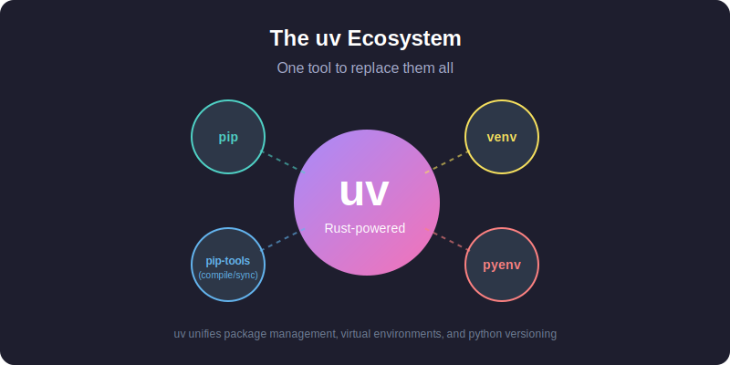
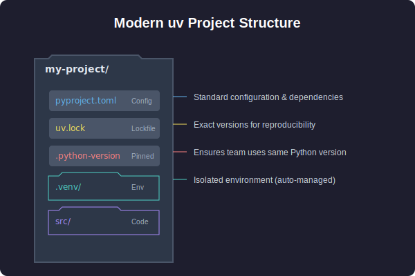

Quick Guide: Managing Python on macOS with uv
Quick Start
# Install uv
brew install uv
# For new projects (modern workflow)
uv init # create project structure
uv add pandas numpy # add dependencies
uv run train.py # run your script
# For existing projects (legacy workflow)
uv venv # create virtual environment
uv pip install -r requirements.txt # install dependencies
uv run train.py # run your script
# Run tools without installing them
uvx ruff check . # run linter
uvx black . # run formatter
Why uv?
If you've been using Python for a while, you're likely familiar with the "tool fatigue" of managing pip, virtualenv, pip-tools, pyenv, and poetry.
uv replaces all of them.
Written in Rust, it is designed to be a drop-in replacement that is 10-100x faster than existing tools. It unifies your workflow into a single, cohesive experience.

It handles:
- Package management (replacing
pipandpip-tools) - Python installation (replacing
pyenv) - Virtual environments (replacing
virtualenvandvenv) - Tool execution (replacing
pipx) - Project management (replacing
poetryorpdm)
Installing uv
The easiest way to install uv on macOS is via Homebrew:
uv automatically detects your Mac's architecture (Apple Silicon or Intel), so no extra configuration is needed.
Keep it updated:
Core Concepts
uv simplifies Python development by handling three distinct use cases:
- Projects: Building an application or library with dependencies.
- Scripts: Running a single-file Python script with inline dependencies.
- Tools: Running command-line utilities (like
rufforhttpie) globally.
1. Modern Project Management
For new projects, uv uses the standard pyproject.toml for configuration and a cross-platform uv.lock for reproducible builds.

Start a new project:
This creates a clean project structure with a pyproject.toml, .gitignore, and a hello.py.
Add dependencies:
# Add runtime dependencies
uv add pandas requests
# Add development dependencies
uv add pytest ruff --dev
Run your code:
uv automatically manages the virtual environment in .venv. You never need to manually activate it!
2. Managing Python Versions
Forget pyenv. uv can install and manage Python versions for you, keeping them isolated in ~/.cache/uv.
Install a specific version:
Pin a version for your project:
This creates a .python-version file. When you run uv run, it will automatically use the pinned version, downloading it if necessary. This ensures your entire team and CI pipeline use the exact same Python version.
3. Running Tools with uvx
Use uvx (an alias for uv tool run) to execute Python command-line tools without polluting your global environment or project dependencies.
# Run a linter
uvx ruff check .
# Run a formatter
uvx black .
# Start a temporary Jupyter server
uvx --from jupyterlab jupyter lab
Each tool runs in its own isolated, temporary environment. It's fast, clean, and safe.
Legacy Projects (requirements.txt)
If you have an existing project using requirements.txt, uv works as a drop-in replacement for pip and venv.
Setup:
# Create a virtual environment
uv venv
# Install dependencies (lightning fast!)
uv pip install -r requirements.txt
Run:
Performance Notes
Why is uv so fast?
- Rust: It's built with performance in mind, without the overhead of Python startup times.
- Global Cache: It caches built wheels globally. If you've installed
numpyin one project, installing it in another is instant (using copy-on-write links on macOS). - Parallelism: It downloads and installs packages in parallel, maximizing your bandwidth.
Summary
| Task | Old Way | The uv Way |
|---|---|---|
| Install Python | pyenv install 3.12 |
uv python install 3.12 |
| New Project | mkdir proj && cd proj && python -m venv .venv |
uv init proj |
| Install Package | pip install pandas && pip freeze > requirements.txt |
uv add pandas |
| Run Script | source .venv/bin/activate && python script.py |
uv run script.py |
| Run Tool | pipx run black |
uvx black |
Switching to uv on macOS is one of the highest-ROI changes you can make to your Python workflow today. It's faster, simpler, and standard-compliant.